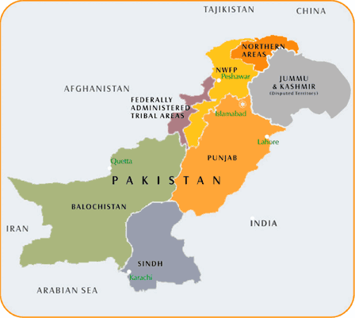

Administrative Units of Pakistan |
|  |
Punjab |
|
Punjab literally means the land of 5 rivers term refers to the 5 rivers flowing thru the region. Due to its rivers Punjab is the most fertile and most populated province of Pakistan. People speak Punjabi here and have many colorful traditions. Punjab is considered most developed, populous, and prosperous province of Pakistan having about 60% of the country's total population living in it.Historically, the Punjab region has been part of Sindu Sapta the term meaning (7 Rivers) but in the course of time southern Sindh was shrieked to a small province and Punjab became a larger and more prosperous region of the area. The word Punjab was introduced by the by the Mughals in the 17th Century AD. It is a combination of the Persian words panj (five) and ab (water), thus the (land of) five rivers. In the Rigveda, the sacred text of Vedism, the Punjab region is associated with the ancient Sapta Sindhu, the Land of Seven Rivers, whilst the later Greeks referred to Punjab as Pentapotamia, an inland delta of five converging rivers. The British used to call Punjab "Our Prussia." Back to top |
Balochistan |
|
The province of Balochistan (or Baluchistan) in Pakistan contains most of historical Balochistan and is named after the Baloch.Balochistan is the biggest province of Pakistan with respect to there area this is biggest province of Pakistan but its population is lesser than all provinces the capital of Balochistan is Quetta. The climate of Balochistan is mixed. Some regions are cold and some regions are too hot. Neighbouring regions are Iranian Balochistan to the west, Afghanistan and the Federally Administered Tribal Areas to the north and Punjab and Sindh to the east. To the south is the Arabian Sea. The principal languages in the province are Baluchi, Pashto, Brahui, and Persian. The capital and largest city is Quetta. Back to top |
Sindh |
|
Sindh is the industrial province of Pakistan. All industry of Sindh is present in Karachi.Pakistan consists of four provinces. Its second largest province is known as Sindh with its capital in Karachi, which is not only the most populous metropolis of the country, but also, a commercial hub.The province of Sindh has two gigantic seaports and both are located in Karachi. The biggest international airport of Pakistan is also situated in Karachi and is widely known as Qaid-e-Azam International airport.The Province of Sindh forms the lower Indus basin and lies between 23 to 35 Degree and 28-30, north latitude and 66-42 and 71-1-degree east longitude. It is about 579 kms in length from north to south and nearly 442 kms in its extreme breadth (281 kms average). It covers the area of 1,40,915 square kms and is about as large as England. Back to top |
NWFP |
|
North-West Frontier Province is a province of present day Pakistan. It has recently been renamed as Khyber Pakhtunkhwa. This part of the Sub-continent since the earliest times has been subject to invading activities. The people of the place, however, have since proved themselves to be very aggressive especially to the people whom they thought had come to dominate them. It is said that the Aryans were the first ones who invaded this place around 4000 years ago. Later on, the Persians whp came around in 500 BC. After that many arrived here including Greeks, Mauryans, Huns and the Guptas etc. and then came the Muslims. Subuktigin was the first Muslim ruler who attacked Kabul and drove the natives in the present NWFP. With the collaboration of Muslim invaders and the local Muslim Pushtoons, Islam started to dominate the region. The same Pushtoons then helped thefamous invader of Indian history, Mahmud of Ghazna in his attacks on India. Back to top |